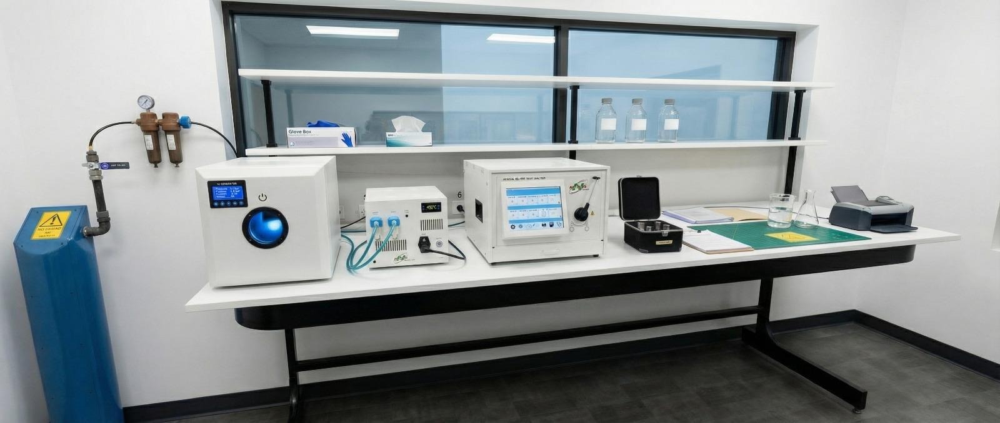

01
Cannabinoid potency
HPLC-DAD/PDA analysis for THC, THCA, CBD, CBDA, and selected minor cannabinoids. Reports include total THC and total CBD calculations where applicable.
HPLC-DAD
Cannabis analytical testing | South Africa
Clear, defensible cannabis test results for cultivators, extractors, manufacturers, and product teams building safer cannabinoid products.
Built for routine release work
AfriCanna Analytics is being structured as a lean South African cannabis testing laboratory with a Phase 1 focus on cannabinoid potency, terpene profiling, and residual solvent screening. Phase 2 expands the menu into pesticides, mycotoxins, and heavy metals through LC-MS/MS and ICP-MS capability.
Core services
HPLC-DAD/PDA analysis for THC, THCA, CBD, CBDA, and selected minor cannabinoids. Reports include total THC and total CBD calculations where applicable.
HPLC-DAD
Quantitative terpene profiling for cultivar development, formulation, product differentiation, and batch comparison. Launch panel targets a practical core-18 terpene/terpenoid list.
GC-FID
Headspace GC-FID testing for volatile solvents relevant to extracts and concentrates, including hydrocarbons, alcohols, ketones, esters, and aromatics.
HS-GC-FID
Pesticides, mycotoxins, and heavy metals are planned as Phase 2 services using triple-quadrupole LC-MS/MS and ICP-MS methods as demand and scope expansion justify the additional instrumentation.
LC-MS/MS + ICP-MS
Service menu
Prices are shown per sample in South African rand and should be confirmed at quotation. Complex matrices, rush work, method development, and additional preparation may change the final quote.
Rush release: subject to capacity, typically +30%.
Custom method work, stability studies, and unusual matrices are quoted after review.
Instrument platform
Phase 1 uses two GC-FID systems and HPLC-DAD to cover the highest-demand cannabis chemistry without overcomplicating launch operations. The planned Phase 2 build adds LC-MS/MS and ICP-MS for contaminant compliance.
HS-GC-FID
HPLC-DAD
LC-MS/MS
ICP-MS
Headspace sampling protects the GC from heavy cannabis oils and supports routine solvent release work for extracts, distillates, resins, oils, and concentrates.
GC-FID quantitation supports product profiling and batch comparison once retention times, calibration curves, and QC acceptance limits are validated.
HPLC-DAD is preferred for acidic and neutral cannabinoids because it avoids the thermal decarboxylation risk associated with GC-only potency workflows.
Sample types

Submission workflow
Tell us the matrix, test panels, batch details, and required turnaround.
Use sealed, clearly labelled containers with enough material for preparation and repeats.
Each sample receives a unique ID, condition check, custody record, and storage location.
Sequences include calibration, blanks, QC checks, data review, and technical approval.
Results are issued as a Certificate of Analysis with method notes and reporting units.
Quality system
AfriCanna Analytics is being built around ISO/IEC 17025-style controls from the start: documented methods, calibrated equipment, traceable reference standards, chain of custody, staff competency records, data review, nonconformance handling, and controlled reporting.
SAHPRA testing-laboratory pathway planning
SANAS ISO/IEC 17025 accreditation-readiness
Controlled cannabis sample storage and reconciliation
Validated methods, calibration, QC, and review records
Start a submission
For now, use this form as the website structure. It can be connected later to email, WhatsApp, a booking system, or a LIMS intake workflow.